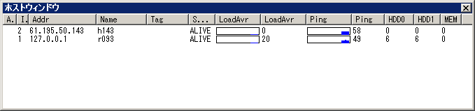

[トップ] [変更履歴]
[目次] [用語] | [AdmCli]
[ADMSV] [RSV]
| [VCE-Log] [VCEモニター]
ホストウィンドウ

ウィンドウの説明
このウィンドウは、ホストで起動している RSVの状態を表示します。
各項目の見出し列をクリックする事で、その項目でソートする事が出来ます。
また、各行は複数選択が可能で、一部コマンド以外は複数行を同時に選択して実行する事が出来ます。
各項目の説明
- Alert
- 設定した条件を満たした時に「！」マークが出現し、注意を促します。
- Id
- admsv がホスト毎に与えた一意のID番号です。
- Addr
- ホストのIPアドレスです。
- Name
- ホストの名前です。
- Tag
- 管理用Tag。admsv 設定ファイル又はクライアントから自由に設定出来ます。管理しやすいように、それぞれ指定して下さい。
- State
- ホストの状態を表します。DEAD,INIT,ALIVE の３つの状態があります。
DEAD,INIT の場合は行が赤く表示されます。
- DEAD : rsvへのコネクションが張れない(rsvが動いていないか、ネットワークが切断している)
- INIT : rsvへのコネクションは張れているが、pingが帰って来ない(rsvが起動しているが、止まっている)
- ALIVE : rsvが正常に稼働している。
- LoadAvr
- ホストのロードアベレージです。1000 倍した値が表示されています。
- LoadAvr グラフ
- ロードアベレージのグラフです。[ツール]-[設定]-[グラフ] で カスタマイズ可能です。
- Ping
- ホストとのping値です。単位は、ミリ秒です。
- Ping グラフ
- Pingのグラフです。[ツール]-[設定]-[グラフ] で カスタマイズ可能です。
ホストウィンドウの操作
ホストウィンドウでは、以下の操作を行う事が出来ます。
ホストウィンドウの操作は、ウィンドウメニューの[ホスト]から、またはホストウィンドウ上で右クリックする事によって現れるメニューから行う事が出来ます。
- ウィンドウの自動更新の切り替え
- ウィンドウ情報の自動更新のOn/Offを切り替えます。
- ウィンドウの更新
- ウィンドウ情報を更新します。
- コマンド実行
- UNIXコマンドを実行します。ホストで実行されている rsv がコマンドを受取り、実行します。コマンド結果は結果ウィンドウに出力されます。
- タグの編集
- ホストのTAGの編集をします。権限制限があります。（未実装）
- ホストの作成
- 新しくホストを追加します。追加するホストのIPアドレス、Tagを指定します。権限制限があります。（未実装）
- ホストの削除
- ホストを削除します。権限制限があります。（未実装）
Copyright 2000-2005 CommunityEngine Inc. All rights reserved.